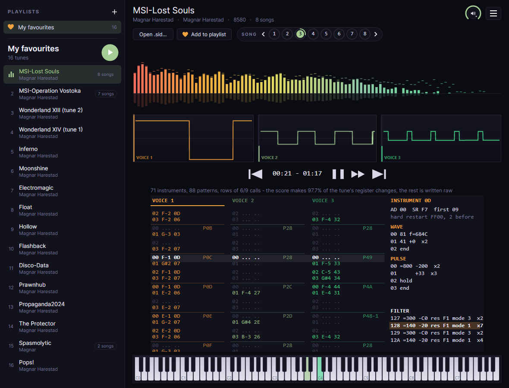
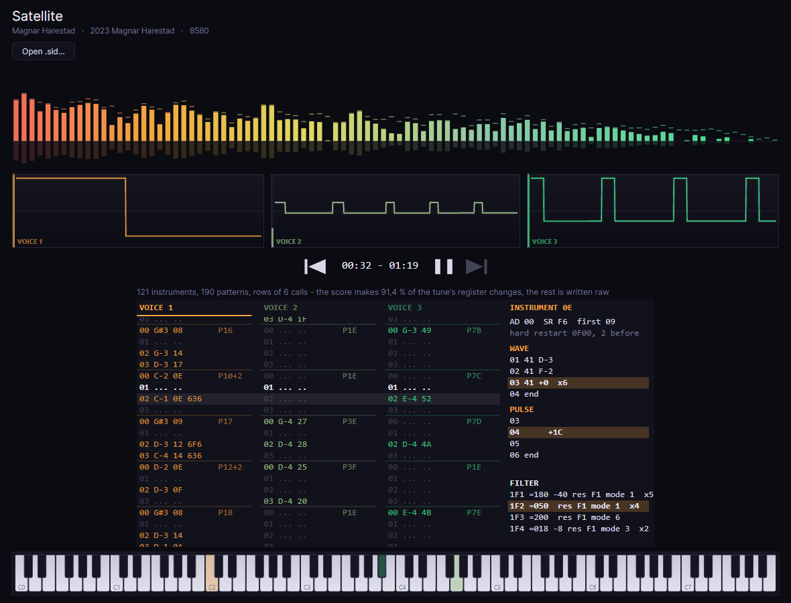

MagPlaySID v1.0
Release date:
A player for Commodore 64 music that shows how a tune is built. Drop any .sid on it:
it plays on an emulated C64, and you see it as a tracker would - its notes, instruments and effects
in rows that scroll with the music.
Preview Also for macOS · Apple Silicon macOS · Intel Linux · x64 release notes opening it on a Mac

What it does
Any tune, played as the C64 plays it, and read back as a score.
Any .sid
PSID and RSID, PAL and NTSC, played on the raster or a CIA timer, once a frame or many times. The tune's own 6502 code runs on an emulated C64 - its timers, interrupts and memory banking - and every write reaches the SID on the cycle it was made.
Digis
Samples streamed from an NMI play as they are written, thousands of times a second - the drums and voices of ThcMOD and LMan's tunes, which a player that calls a tune once a frame never hears.
Transcribed as you listen
The tune becomes a score: notes on its own row grid, instruments with their wave and pulse programs, the filter, patterns and order lists. The first half minute is ready in a moment, the whole tune soon after.
Rows that scroll
Each voice's rows - note, instrument, effects - go past as they sound. Click a voice to see its instrument: envelope, hard restart, and the wave, pulse and filter programs, the step sounding lit.
A piano
Eight octaves along the bottom, each voice's key lit in its colour as loud as its envelope - an arpeggio, a slide or a drum shows as it plays.
2SID and 3SID
Tunes for two or three SID chips play on all of them, each the model its header names, with a scope and score columns for every voice.
Its length
Measured on the C64 by watching for the tune's memory to come round again - an RSID's too - so the clock says how long it plays before it repeats.
Drop and play
Drag a .sid from the desktop onto the window, open one, or name it on the command line. Space pauses, and the rows stop with the music.
Up to date
Asked once, the first time it starts: say yes and MagPlaySID looks for a newer version each time it opens, and offers this page when there is one. Check for updates at start in the menu at the top right turns it on or off.

Get started
- Download the package for your system from the latest release. .NET is inside - there is nothing else to install.
- Windows: unzip it anywhere and run
MagPlaySID.exe. Linux: unpack it and run./MagPlaySID. Mac: unzip it and move MagPlaySID to Applications. - Drop a
.sidon the window, or choose Open .sid.... The High Voltage SID Collection has tens of thousands of them. - Click a scope to mute its voice; click a voice's rows to see its instrument.
On a Mac, the app is not notarised by Apple yet, so macOS stops it the first time it is opened:
- macOS 15 Sequoia and later: try to open MagPlaySID once and close the warning. Then go to System Settings → Privacy & Security, scroll down to the line about MagPlaySID and choose Open Anyway.
- macOS 14 and earlier: right-click MagPlaySID, choose Open, then Open again.
- If macOS says MagPlaySID is damaged and can't be opened, it is the mark macOS puts on everything downloaded from the internet, not the app. Remove it in Terminal:
xattr -dr com.apple.quarantine /Applications/MagPlaySID.appThat tells macOS to stop checking this one app, so only do it for software you trust. Either way it is needed once, not every time.
How it works
The sound is the tune's own; the score is a reading of it, checked against it.
C64 timers and IRQs
CIA timers, the raster interrupt, NMIs, banked memory, and a 6510 that makes each memory access on the cycle the real chip does - its throw-away reads included, which some digi players depend on.
A score that plays back exactly
The transcription is played as it is made, and every register it gets wrong is written as the tune wrote it - so the score always makes the tune's own writes.
How much is understood
What the notes and instruments make, rather than raw writes, is the measure: 96.5% of the tunes' register changes on average.
License and credits
MagPlaySID is by Magnar Harestad of Censor Design, built on the engine of the MagSID Editor. A big thanks and shoutout to my fellow Censor Design members: Krikkit, Slaygon, Bob and Swallow.
It is free software under the GNU General Public License, version 2 or later, and comes with no warranty. Its SID emulation is a C# translation of reSID by Dag Lem; sound goes through PortAudio, and the window is Avalonia. See third-party notices. The tunes belong to their composers - MagPlaySID only plays and reads them.